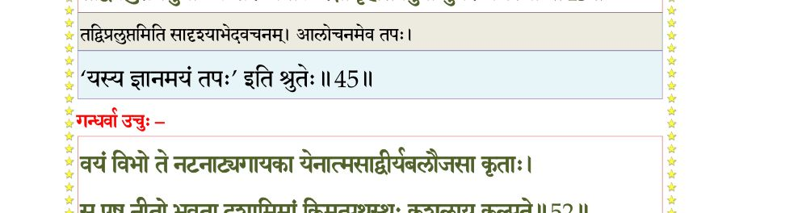
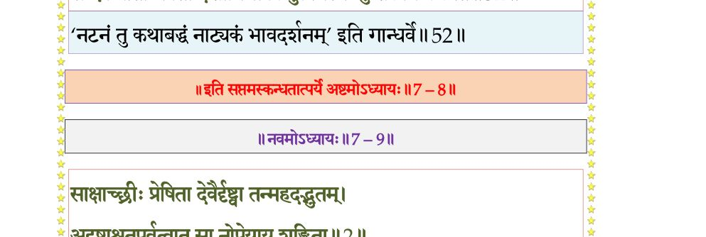

स्कन्ध 7 · अध्याय 8
श्लोक १
नारद उवाच–
अथ दैत्यसुताः सर्वे श्रुत्वा तदनुवर्णितम् ।
जगृहुर्निरवद्यत्वान्नैव गुर्वनुशिक्षितम्।। १ ।।
अथ दैत्यसुताः सर्वे श्रुत्वा तदनुवर्णितम् ।
जगृहुर्निरवद्यत्वान्नैव गुर्वनुशिक्षितम्।। १ ।।
श्लोक २
अथाचार्यसुतस्तेषां बुद्धिमेकान्तसंस्थिताम् ।
आलक्ष्य भीतस्त्वरितो राज्ञ आवेदयद् यथा।। २ ।।
आलक्ष्य भीतस्त्वरितो राज्ञ आवेदयद् यथा।। २ ।।
श्लोक ३
श्रुत्वा तदप्रियं दैत्यो दुस्सहं तनयानयम् ।
कोपावेशचलद्गात्रः पुत्रं हन्तुं मनो दधे।। ३ ।।
कोपावेशचलद्गात्रः पुत्रं हन्तुं मनो दधे।। ३ ।।
श्लोक ४
क्षिप्त्वा परुषया वाचा प्रह्लादमतदर्हणम् ।
आहेक्षमाणः पापेन तिरश्चीनेन चक्षुषा।। ४ ।।
आहेक्षमाणः पापेन तिरश्चीनेन चक्षुषा।। ४ ।।
श्लोक ५
प्रश्रयावनतं दान्तं बद्धाञ्जलिमवस्थितम् ।
सर्पः पदाऽऽहत इव श्वसन् प्रकृतिदारुणः।। ५ ।।
सर्पः पदाऽऽहत इव श्वसन् प्रकृतिदारुणः।। ५ ।।
श्लोक ६
हिरण्यकशिपुरुवाच–
हे दुर्विनीत मन्दात्मन् कुलभेदकराधम ।
स्तब्धं मच्छासनोद्धूतं नेष्ये त्वाऽद्य यमक्षयम्।। ६ ।।
हे दुर्विनीत मन्दात्मन् कुलभेदकराधम ।
स्तब्धं मच्छासनोद्धूतं नेष्ये त्वाऽद्य यमक्षयम्।। ६ ।।
श्लोक ७
क्रुद्धस्य यस्य कम्पन्ते त्रयो लोकाः सहेश्वराः ।
तस्य मेऽभिहितं मूढ शासनं किंबलोऽत्यगाः।। ७ ।।
तस्य मेऽभिहितं मूढ शासनं किंबलोऽत्यगाः।। ७ ।।
श्लोक ८
प्रह्लाद उवाच–
न केवलं मे भवतश्च राजन् स वै बलं बलिनां चापरेषाम् ।
परावरेषां स्थिरजङ्गमा ये ब्रह्मादयो येन वशं प्रणीताः।। ८ ।।
न केवलं मे भवतश्च राजन् स वै बलं बलिनां चापरेषाम् ।
परावरेषां स्थिरजङ्गमा ये ब्रह्मादयो येन वशं प्रणीताः।। ८ ।।
श्लोक ९
स ईश्वरः काल उरुक्रमोऽसावोजः सहः सत्त्वबलेन्द्रियात्मा ।
स एव विश्वं परमः स्वशक्तिभिः सृजत्यवत्यत्ति गुणत्रयेशः।। ९ ।।
स एव विश्वं परमः स्वशक्तिभिः सृजत्यवत्यत्ति गुणत्रयेशः।। ९ ।।
श्लोक १०
जह्यासुरं भावमिमं स्वमात्मनः
समं मनो धत्स्व न सन्ति विद्विषः ।
ऋतेऽजितादात्मन उत्पथस्थितात्
तद् विद्ध्यनन्तस्य महत् समर्हणम्।। १० ।।
समं मनो धत्स्व न सन्ति विद्विषः ।
ऋतेऽजितादात्मन उत्पथस्थितात्
तद् विद्ध्यनन्तस्य महत् समर्हणम्।। १० ।।
श्लोक ११
दस्यून् पुरं षण्णविजित्य लुम्पतो
मन्यन्त एके स्वजिता दिशो दश ।
जितात्मनो ज्ञस्य समस्य देहिनां
साधोः स्वमोहप्रभवाः कुतः परे।। ११ ।।
मन्यन्त एके स्वजिता दिशो दश ।
जितात्मनो ज्ञस्य समस्य देहिनां
साधोः स्वमोहप्रभवाः कुतः परे।। ११ ।।
श्लोक १२
हिरण्यकशिपुरुवाच–
व्यक्तं त्वं मर्तुकामोऽसि योऽतिमात्रं विकत्थसे ।
मुमूर्षूणां हि मन्दात्मन् ननु स्युर्विप्लुता गिरः।। १२ ।।
व्यक्तं त्वं मर्तुकामोऽसि योऽतिमात्रं विकत्थसे ।
मुमूर्षूणां हि मन्दात्मन् ननु स्युर्विप्लुता गिरः।। १२ ।।
श्लोक १३
यस्त्वया मन्दभाग्योक्तो मदन्यो जगदीश्वरः ।
क्वासौ यदि स सर्वत्र कस्मात् स्तम्भे न दृश्यते।। १३ ।।
क्वासौ यदि स सर्वत्र कस्मात् स्तम्भे न दृश्यते।। १३ ।।
श्लोक १४
सोऽहं विकत्थमानस्य शिरः कायाद्धरामि ते ।
गोपायेत हरिस्त्वाऽद्य यस्ते शरणमीप्सितः।। १४ ।।
गोपायेत हरिस्त्वाऽद्य यस्ते शरणमीप्सितः।। १४ ।।
श्लोक १९
नारद उवाच–
एवं दुरुक्तैर्मुहुरर्दयन् रुषा सुतं महाभागवतं महासुरः ।
खड्गं प्रगृह्योत्पतितो वरासनात् स्तम्भं तताडातिबलः स्वमुष्टिना।।
तदैव तस्मिन् निनदोऽतिभीषणो बभूव येनाण्डकटाहमस्फुटत् ।
यं वै स्वधिष्ण्योपगतं ह्यजादयः श्रुत्वा स्वधामाप्ययमङ्ग मेनिरे।।१६
अभिक्रमन् पुत्रवधेप्सुरोजसा निशम्य निर्ह्रादमपूर्वमद्भुतम् ।
अन्तः सभायां न ददर्श तत्पदं वितत्रसुर्येन सुरारियूथपाः ।। १७
सत्यं विधातुं निजभृत्यभाषितं व्याप्तिं च भूतेष्वखिलेषु चात्मनः ।
अदृश्यतात्यद्भुतरूपमुद्वहन् स्तम्भे सभायां नमृगं नमानुषम्।। १८
ससत्वमेवं परितो विपश्यन् स्तम्भस्य मध्यादनु निर्जिहानम् ।
नायं मृगो नापि नरो विचित्रमहो किमेतन्नृमृगेन्द्ररूपम्।। १९ ।।
एवं दुरुक्तैर्मुहुरर्दयन् रुषा सुतं महाभागवतं महासुरः ।
खड्गं प्रगृह्योत्पतितो वरासनात् स्तम्भं तताडातिबलः स्वमुष्टिना।।
तदैव तस्मिन् निनदोऽतिभीषणो बभूव येनाण्डकटाहमस्फुटत् ।
यं वै स्वधिष्ण्योपगतं ह्यजादयः श्रुत्वा स्वधामाप्ययमङ्ग मेनिरे।।१६
अभिक्रमन् पुत्रवधेप्सुरोजसा निशम्य निर्ह्रादमपूर्वमद्भुतम् ।
अन्तः सभायां न ददर्श तत्पदं वितत्रसुर्येन सुरारियूथपाः ।। १७
सत्यं विधातुं निजभृत्यभाषितं व्याप्तिं च भूतेष्वखिलेषु चात्मनः ।
अदृश्यतात्यद्भुतरूपमुद्वहन् स्तम्भे सभायां नमृगं नमानुषम्।। १८
ससत्वमेवं परितो विपश्यन् स्तम्भस्य मध्यादनु निर्जिहानम् ।
नायं मृगो नापि नरो विचित्रमहो किमेतन्नृमृगेन्द्ररूपम्।। १९ ।।
श्लोक २०
मीमांसमानस्य समुत्थितोऽग्रतो नृसिंहरूपस्तदलं भयानकम् ।
प्रतप्तचामीकरचण्डलोचनं स्फुरत्सटाकेसरजृम्भिताननम्।। २० ।।
प्रतप्तचामीकरचण्डलोचनं स्फुरत्सटाकेसरजृम्भिताननम्।। २० ।।
श्लोक २२
करालदंष्ट्रं करवालचञ्चलं क्षुरान्तजिह्वं भ्रुकुटीमुखोल्बणम् ।
स्तब्धोर्ध्वकर्णं गिरिकन्दराद्भुतव्यात्तास्यनासं हनुभेदभीषणम्।। २१
दिवि स्पृशत्कायमदीर्घपीवरग्रीवोरुवक्षः स्थलमल्पमध्यमम् ।
चन्द्रांशुगौरैश्छुरितं तनूरुहैर्विश्वग्भुजानीकशतैर्नखायुधैः।। २२ ।।
स्तब्धोर्ध्वकर्णं गिरिकन्दराद्भुतव्यात्तास्यनासं हनुभेदभीषणम्।। २१
दिवि स्पृशत्कायमदीर्घपीवरग्रीवोरुवक्षः स्थलमल्पमध्यमम् ।
चन्द्रांशुगौरैश्छुरितं तनूरुहैर्विश्वग्भुजानीकशतैर्नखायुधैः।। २२ ।।
श्लोक २५
दुरासदं सर्वनिजेतरायुधप्रवेकविद्रावितदैत्यदानवम् ।
प्रायेण मेऽयं हरिणौरसारिणा वधः स्मृतोऽनेन समुद्यतस्य किम्।।
एवं ब्रुवंस्त्वभ्यपतद् गदायुधो नदन् नृसिंहं प्रति दैत्यकुञ्जरः ।
अलक्षितोऽग्नौ पतितः पतङ्गमो यथा नृसिंहौजसि सोऽसुरस्तथा।।२४
न तद् विचित्रं खलु सत्वधामनि स्वतेजसांऽशेन पुराऽपिबत् तमः ।
ततोऽभिपद्याभ्यहनन्महासुरो रुषा नृसिंहं गदयोरुवेगया।। २५ ।।
प्रायेण मेऽयं हरिणौरसारिणा वधः स्मृतोऽनेन समुद्यतस्य किम्।।
एवं ब्रुवंस्त्वभ्यपतद् गदायुधो नदन् नृसिंहं प्रति दैत्यकुञ्जरः ।
अलक्षितोऽग्नौ पतितः पतङ्गमो यथा नृसिंहौजसि सोऽसुरस्तथा।।२४
न तद् विचित्रं खलु सत्वधामनि स्वतेजसांऽशेन पुराऽपिबत् तमः ।
ततोऽभिपद्याभ्यहनन्महासुरो रुषा नृसिंहं गदयोरुवेगया।। २५ ।।
श्लोक २७
तं विक्रमन्तं सगदं गदाधरो महोरगं तार्क्ष्यसुतो यथाऽग्रहीत् ।
स तस्य हस्तोत्कलितस्तदाऽसुरो विक्रीडतो यद्वदहिर्गरुत्मतः।। २६
असाध्वमन्यन्त हतौजसोऽमरा घनच्छदा भारत सर्वधिष्ण्यपाः ।
तं मन्यमानो निजवीर्यशङ्कितं यद्धस्तमुक्तो नृहरिं महासुरः।। २७ ।।
स तस्य हस्तोत्कलितस्तदाऽसुरो विक्रीडतो यद्वदहिर्गरुत्मतः।। २६
असाध्वमन्यन्त हतौजसोऽमरा घनच्छदा भारत सर्वधिष्ण्यपाः ।
तं मन्यमानो निजवीर्यशङ्कितं यद्धस्तमुक्तो नृहरिं महासुरः।। २७ ।।
श्लोक २८
पुनस्तमासज्जत खड्गचर्मणी प्रगृह्य वेगेन गतश्रमो मृधे ।
तं श्येनवेगं शतचन्द्रवर्मभिश्चरन्तमच्छिद्रमुपर्यधो हरिः।। २८ ।।
तं श्येनवेगं शतचन्द्रवर्मभिश्चरन्तमच्छिद्रमुपर्यधो हरिः।। २८ ।।
श्लोक ३२
कृत्वाऽट्टहासं खरकेसरोल्बणो निमीलिताक्षं जगृहे महाजवः ।
विष्वक् स्फुरन्तं ग्रहणातुरं हरिर्व्यालो यथाऽऽखुं कुलिशाक्षतत्वचम्।।
द्वार्यूरवापात्य ददार लीलया नखैर्यथाऽहिं गरुडो महाविषम् ।
संरम्भदुष्प्रेक्ष्यकराललोचनो व्यात्ताननान्तं विलिहन् स्वजिह्वया।।३०
असृग्वलाक्तारुणकेसराननो यथाऽऽन्त्रमाली द्विपहत्यया हरिः ।
नखाङ्कुरोत्पाटितहृत्सरोरुहं विसृज्य तस्यानुचरानुदायुधान्।। ३१
अहन् समन्तान्नखशस्त्रपाणिभिर्दोर्दण्डयूथानुपथान् सहस्रशः ।
सटावधूता जलदाः परापतन् ग्रहाश्च तद्दृष्टिविनष्टरोचिषः।। ३२ ।।
विष्वक् स्फुरन्तं ग्रहणातुरं हरिर्व्यालो यथाऽऽखुं कुलिशाक्षतत्वचम्।।
द्वार्यूरवापात्य ददार लीलया नखैर्यथाऽहिं गरुडो महाविषम् ।
संरम्भदुष्प्रेक्ष्यकराललोचनो व्यात्ताननान्तं विलिहन् स्वजिह्वया।।३०
असृग्वलाक्तारुणकेसराननो यथाऽऽन्त्रमाली द्विपहत्यया हरिः ।
नखाङ्कुरोत्पाटितहृत्सरोरुहं विसृज्य तस्यानुचरानुदायुधान्।। ३१
अहन् समन्तान्नखशस्त्रपाणिभिर्दोर्दण्डयूथानुपथान् सहस्रशः ।
सटावधूता जलदाः परापतन् ग्रहाश्च तद्दृष्टिविनष्टरोचिषः।। ३२ ।।
श्लोक ३४
अम्भोधयः श्वासहता विचुक्षुभुर्निर्ह्रादभीता दिगिभा जहुर्दिशः ।
द्यौस्तत्सटाक्षिप्तविमानसंकुला प्रोत्सर्पत क्ष्मा च पदाऽतिपीडिता ।।
शैलाः समुत्पेतुरमुष्य रंहसा तत्तेजसा खं ककुभो न रेजिरे ।
ततः सभायामुपविष्टमुत्तमे नृपासने सम्भृततेजसं विभुम्।। ३४ ।।
द्यौस्तत्सटाक्षिप्तविमानसंकुला प्रोत्सर्पत क्ष्मा च पदाऽतिपीडिता ।।
शैलाः समुत्पेतुरमुष्य रंहसा तत्तेजसा खं ककुभो न रेजिरे ।
ततः सभायामुपविष्टमुत्तमे नृपासने सम्भृततेजसं विभुम्।। ३४ ।।
श्लोक ३५
अलक्षितद्वैरथमत्यमर्षणं प्रचण्डवक्त्रं न बभाज कश्चन ।
निशाम्य लोकत्रयमस्तकज्वरं तमादिदैत्यं हरिणा हतं मृधे।। ३५ ।।
निशाम्य लोकत्रयमस्तकज्वरं तमादिदैत्यं हरिणा हतं मृधे।। ३५ ।।
श्लोक ३६
प्रहर्षवेगोत्कलितानना मुहुः प्रसूनवर्षैर्ववृषुः सुरस्त्रियः ।
तदा विमानावलिभिर्नभःस्थलं दिदृक्षतां सङ्कुलमास नाकिनाम्।।३६।।
तदा विमानावलिभिर्नभःस्थलं दिदृक्षतां सङ्कुलमास नाकिनाम्।।३६।।
श्लोक ३८
सुरानका दुन्दुभयो विनेदिरे गान्धर्वमुख्या ननृतुर्जगुः स्रियः ।। ३७
त उपव्रज्य विबुधा ब्रह्मेन्द्रगिरिशादयः ।
ऋषयः पितरः सिद्धा विद्याधरमहोरगाः।। ३८ ।।
त उपव्रज्य विबुधा ब्रह्मेन्द्रगिरिशादयः ।
ऋषयः पितरः सिद्धा विद्याधरमहोरगाः।। ३८ ।।
श्लोक ३९
मनवः प्रजानां पतयो गन्धर्वाप्सरचारणाः ।
यक्षाः किम्पुरुषास्तात वेतालाः सह किन्नराः।। ३९ ।।
यक्षाः किम्पुरुषास्तात वेतालाः सह किन्नराः।। ३९ ।।
श्लोक ४०
ते विष्णुपार्षदाः सर्वे सुनन्दकुमुदादयः ।
मूधर्ि्न बद्धाञ्जलिपुटा आसीनं तीव्रतेजसम् ।
ईडिरे नरशार्दूलं नातिदूरचराः पृथक्।। ४० ।।
मूधर्ि्न बद्धाञ्जलिपुटा आसीनं तीव्रतेजसम् ।
ईडिरे नरशार्दूलं नातिदूरचराः पृथक्।। ४० ।।
श्लोक ४२
ब्रह्मोवाच–
नतोऽस्म्यनन्ताय दुरन्तशक्तये विचित्रवीर्याय पवित्रकर्मणे ।
विश्वस्य सर्गस्थितिसंयमान् गुणैः स्वलीलया सन्दधतेऽव्ययात्मने।।
रुद्र उवाच–
कोपकालो युगान्तस्ते हतोऽयमसुरोऽल्पकः ।
तत्सुतं पाह्यनुसृतं भक्तं ते भक्तवत्सल।। ४२ ।।
नतोऽस्म्यनन्ताय दुरन्तशक्तये विचित्रवीर्याय पवित्रकर्मणे ।
विश्वस्य सर्गस्थितिसंयमान् गुणैः स्वलीलया सन्दधतेऽव्ययात्मने।।
रुद्र उवाच–
कोपकालो युगान्तस्ते हतोऽयमसुरोऽल्पकः ।
तत्सुतं पाह्यनुसृतं भक्तं ते भक्तवत्सल।। ४२ ।।
श्लोक ४३
इन्द्र उवाच–
प्रत्यानीताः परम भवता त्रायता नः स्वभागा
दैत्याक्रान्तं हृदयकमलं त्वद्गृहं प्रत्यबोधि ।
कालग्रस्तं कियदिदमहो नाथ शुश्रूषतां ते
मुक्तिस्तेषां न हि बहुमता नारसिंहापरैः किम्।। ४३ ।।
प्रत्यानीताः परम भवता त्रायता नः स्वभागा
दैत्याक्रान्तं हृदयकमलं त्वद्गृहं प्रत्यबोधि ।
कालग्रस्तं कियदिदमहो नाथ शुश्रूषतां ते
मुक्तिस्तेषां न हि बहुमता नारसिंहापरैः किम्।। ४३ ।।
श्लोक ४५
ऋषय ऊचुः–
त्वं नस्तपः परममात्थ यदात्मतेजो येनेदमादिपुरुषात्मगतं समस्तम् ।
तद् विप्रलुप्तममुनाद्य शरण्यपाल रक्षागृहीतवपुषा पुनरन्वमंस्थाः।।
पितर ऊचुः–
श्राद्धानि नोऽधिबुभुजे प्रसभं तनूजै
र्दत्तानि तीर्थसमयेऽपि तिलाम्बु चापिबत् ।
तस्योदरान्नखविदीर्णवपाद् य आर्च्छत्
तस्मै नमो भगवतेऽखिलकर्मगोप्त्रे।। ४५ ।।
त्वं नस्तपः परममात्थ यदात्मतेजो येनेदमादिपुरुषात्मगतं समस्तम् ।
तद् विप्रलुप्तममुनाद्य शरण्यपाल रक्षागृहीतवपुषा पुनरन्वमंस्थाः।।
पितर ऊचुः–
श्राद्धानि नोऽधिबुभुजे प्रसभं तनूजै
र्दत्तानि तीर्थसमयेऽपि तिलाम्बु चापिबत् ।
तस्योदरान्नखविदीर्णवपाद् य आर्च्छत्
तस्मै नमो भगवतेऽखिलकर्मगोप्त्रे।। ४५ ।।
भागवततात्पर्यनिर्णय

श्लोक ४६
सिद्धा ऊचुः–
यो नो गतिं योगसिद्धामसाधुरहार्षीद् योगतपोबलेन ।
नानादर्पं तं नखैर्विर्ददार तस्मै तुभ्यं प्रणताः स्मो नृसिंह ।। ४६ ।।
यो नो गतिं योगसिद्धामसाधुरहार्षीद् योगतपोबलेन ।
नानादर्पं तं नखैर्विर्ददार तस्मै तुभ्यं प्रणताः स्मो नृसिंह ।। ४६ ।।
श्लोक ४७
विद्याधरा ऊचुः –
विद्यां पृथग्धारणयाऽनुरुद्धां न्यषेददज्ञो बलवीर्यदृप्तः ।
स येन सङ्ख्ये पशुवद्धतस्तं महानृसिंहं प्रणताः स्म नित्यम्।।४७।।
विद्यां पृथग्धारणयाऽनुरुद्धां न्यषेददज्ञो बलवीर्यदृप्तः ।
स येन सङ्ख्ये पशुवद्धतस्तं महानृसिंहं प्रणताः स्म नित्यम्।।४७।।
श्लोक ४८
नागा ऊचुः –
येन पापेन रत्नानि स्त्रीरत्नानि हृतानि नः ।
तद्वक्षःपाटनेनासां दत्तानन्द नमोऽस्तु ते।। ४८ ।।
येन पापेन रत्नानि स्त्रीरत्नानि हृतानि नः ।
तद्वक्षःपाटनेनासां दत्तानन्द नमोऽस्तु ते।। ४८ ।।
श्लोक ५०
मनव ऊचुः –
मनवो वयं तव निदेशकारिणो दितिजेन देव परिभूतसेतवः ।
भवता खलः स उपसंहृतः प्रभो करवाम ते किमनुशाधि किङ्करान् ।।
प्रजापतय ऊचुः–
प्रजेशा वयं ते परेशाभिसृष्टा न येन प्रजा वै सृजामो निषिद्धाः ।
स एष त्वया भिन्नवक्षास्तु शेते जगन्मङ्गलं सत्वमूर्तेऽवतारः।।५०।।
मनवो वयं तव निदेशकारिणो दितिजेन देव परिभूतसेतवः ।
भवता खलः स उपसंहृतः प्रभो करवाम ते किमनुशाधि किङ्करान् ।।
प्रजापतय ऊचुः–
प्रजेशा वयं ते परेशाभिसृष्टा न येन प्रजा वै सृजामो निषिद्धाः ।
स एष त्वया भिन्नवक्षास्तु शेते जगन्मङ्गलं सत्वमूर्तेऽवतारः।।५०।।
श्लोक ५२
गन्धर्वा ऊचुः–
वयं विभो ते नटनाट्यगायका येनात्मसाद् वीर्यबलौजसा कृतः ।
स एष नीतो भवता दशामिमां किमुत्पथस्थः कुशलाय कल्पते।।५१
चारणा ऊचुः–
हरे तवाङ्घ्रिपङ्कजं भवापवर्गमाश्रिताः ।
य एष साधुहृच्छ्रयस्त्वयाऽसुरः समापितः।। ५२ ।।
वयं विभो ते नटनाट्यगायका येनात्मसाद् वीर्यबलौजसा कृतः ।
स एष नीतो भवता दशामिमां किमुत्पथस्थः कुशलाय कल्पते।।५१
चारणा ऊचुः–
हरे तवाङ्घ्रिपङ्कजं भवापवर्गमाश्रिताः ।
य एष साधुहृच्छ्रयस्त्वयाऽसुरः समापितः।। ५२ ।।
भागवततात्पर्यनिर्णय

श्लोक ५३
यक्षा ऊचुः–
वयमनुचरमुख्याः कर्मभिस्ते मनोज्ञै
स्त इह दितिसुतेन प्रापिता वाहकत्वम् ।
अनुजनपरितापं तत्कृतं जानता ते
नरहर उपनीतः पञ्चतां पञ्चविंश।। ५३ ।।
वयमनुचरमुख्याः कर्मभिस्ते मनोज्ञै
स्त इह दितिसुतेन प्रापिता वाहकत्वम् ।
अनुजनपरितापं तत्कृतं जानता ते
नरहर उपनीतः पञ्चतां पञ्चविंश।। ५३ ।।
श्लोक ५४
किंपुरुषा ऊचुः–
वयं किम्पुरुषास्त्वं तु महापुरुष ईश्वरः ।
अयं कापुरुषो नष्टो धिक्कृतः साधुभिर्यतः।। ५४ ।।
वयं किम्पुरुषास्त्वं तु महापुरुष ईश्वरः ।
अयं कापुरुषो नष्टो धिक्कृतः साधुभिर्यतः।। ५४ ।।
।। इति श्रीमद्भागवते सप्तमस्कन्धेऽष्टमोऽध्यायः ।।